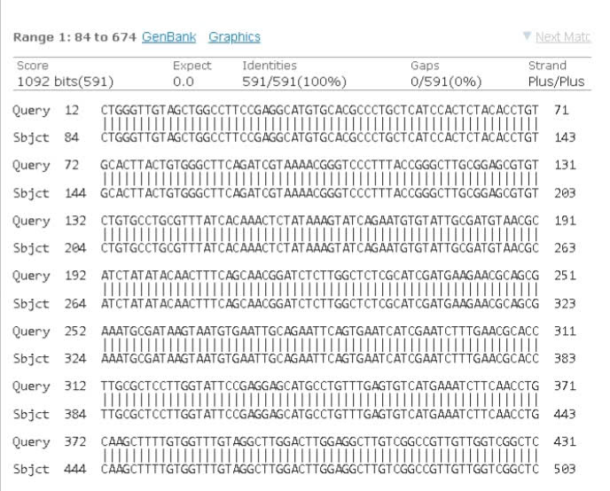

Trợ Lý Nấm Linh Chi
Hỏi đáp bằng giọng nói, hình ảnh & âm thanh
📜 Minh Chứng Nguồn Gốc Sản Phẩm

Giống nấm:
Linh Chi LC3
Đơn vị nhân giống & nuôi trồng:
Đội Trái Tim Xanh
Kiểm tra trình tự gene:
Ngân hàng gene NCBI
Kết quả:
Trùng khớp với Ganoderma Multipileum
Xin chào! Tôi có thể giúp gì cho bạn về sản phẩm Nấm Linh Chi?
Gửi